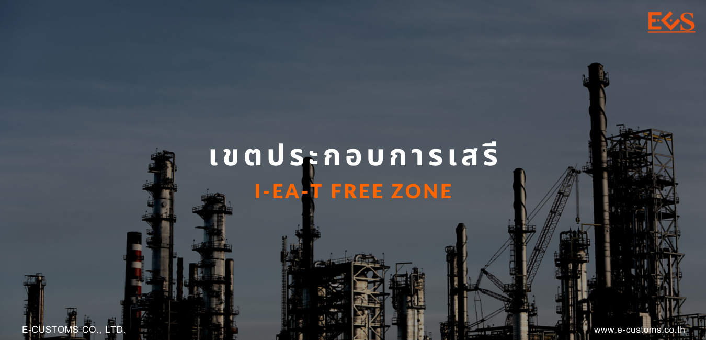

เขตประกอบการเสรี (I-EA-T)
หลักการทั่วไป
พระราชบัญญัติการนิคมอุตสาหกรรมแห่งประเทศไทย พ.ศ. 2522 ได้มีการจัดตั้ง การนิคมอุตสาหกรรมแห่งประเทศไทยขึ้นเป็นรัฐวิสาหกิจสังกัดกระทรวงอุตสาหกรรมมีชื่อย่อว่า “กนอ.” มีวัตถุประสงค์ในการจัดตั้งหลายประการ โดยเริ่มจากการจัดหาที่ดินที่เหมาะสมเพื่อจัดตั้ง หรือขยายนิคมอุตสาหกรรม หรือเพื่อดำเนินธุรกิจอื่นที่จะเป็นประโยชน์ ดำเนินการปรับปรุงที่ดินเพื่อให้บริการ ตลอดจนจัดสิ่งอำนวยความสะดวกในการดำเนินงาน รวมทั้งสาธารณูปโภคต่างๆให้แก่ผู้ประกอบกิจการอุตสาหกรรมในเขตนิคมอุตสาหกรรม พื้นที่เขตนิคมอุตสาหกรรมแบ่งออกเป็น 2 ลักษณะ คือ
- พื้นที่เขตอุตสาหกรรมทั่วไป อันเป็นเขตพื้นที่ที่กำหนดไว้สำหรับการประกอบอุตสาหกรรมและกิจการอื่นที่เป็นประโยชน์หรือเกี่ยวเนื่องกับการประกอบอุตสาหกรรม
- พื้นที่เขตประกอบการเสรี (เขตอุตสาหกรรมส่งออกเดิม) อันเป็นเขตพื้นที่ที่กำหนดไว้สำหรับ การประกอบอุตสาหกรรม พาณิชยกรรม หรือกิจการอื่นที่เกี่ยวเนื่องกับการประกอบอุตสาหกรรมหรือ พาณิชยกรรม เพื่อประโยชน์ในทางเศรษฐกิจ การรักษาความมั่นคงของรัฐ สวัสดิภาพของประชาชน การจัดการด้านสิ่งแวดล้อม หรือความจำเป็นอื่นตามที่คณะกรรมการกำหนด โดยของที่เข้าไปในเขตดังกล่าวจะได้รับสิทธิประโยชน์ทางภาษีอากร และค่าธรรมเนียมเพิ่มขึ้นตามที่กฎหมายบัญญัติ
ในปัจจุบันเขตประกอบการเสรี ที่มีสำนักงานศุลกากรตั้งอยู่มี 12 แห่ง ได้แก่
- นิคมอุตสาหกรรมลาดกระบัง (กรุงเทพฯ)
- นิคมอุตสาหกรรมบางปู (สมุทรปราการ)
- นิคมอุตสาหกรรมภาคเหนือ (ลำพูน)
- นิคมอุตสาหกรรมแหลมฉบัง (ชลบุรี)
- นิคมอุตสาหกรรมเหมราช (ชลบุรี)
- นิคมอุตสาหกรรมบ้านหว้า (อยุธยา)
- นิคมอุตสาหกรรมบางปะอิน (อยุธยา)
- นิคมอุตสาหกรรมเกตเวย์ซิตี้ (ฉะเชิงเทรา)
- นิคมอุตสาหกรรมส่งออกภาคใต้ (สงขลา)
- นิคมอุตสาหกรรมพิจิตร (พิจิตร)
- นิคมอุตสาหกรรมอัญธานี (กรุงเทพฯ)
- นิคมอุตสาหกรรมทีเอฟดี (ฉะเชิงเทรา) เพื่อการส่งเสริมการส่งออกแก่ผู้ประกอบการทั้งในเขตอุตสาหกรรมทั่วไป และเขตประกอบการเสรี การนิคมอุตสาหกรรมแห่งประเทศไทยได้ให้สิทธิประโยชน์ทางด้านภาษีอากรแก่ผู้ประกอบการในเขตประกอบการเสรี และเขตอุตสาหกรรมทั่วไปของการนิคมอุตสาหกรรมแห่งประเทศไทย โดยกรมศุลกากรจะเป็นผู้กำหนดระเบียบปฏิบัติสำหรับการปฏิบัติในเขตประกอบการเสรีตามบทบาทหน้าที่ในการควบคุมดูแล และรับผิดชอบในเรื่องภาษีอากรของรัฐ
กฎหมายและระเบียบที่เกี่ยวข้อง
กฎหมายและระเบียบที่เกี่ยวข้องกับเขตประกอบการเสรี
- พระราชบัญญัติการนิคมอุตสาหกรรมแห่งประเทศไทย พ.ศ. 2522
- พระราชบัญญัติการนิคมอุตสาหกรรมแห่งประเทศไทย (ฉบับที่ 3) พ.ศ. 2539
- พระราชบัญญัติการนิคมอุตสาหกรรมแห่งประเทศไทย (ฉบับที่ 4) พ.ศ. 25504
- ประกาศการนิคมอุตสาหกรรมแห่งประเทศไทยที่ 63 /2551 เรื่อง แบบคำขอ แบบใบรับรอง แบบรายงาน และหนังสือรับรองการขอรับสิทธิประโยชน์
- ประกาศการนิคมอุตสาหกรรมแห่งประเทศไทยที่ 96 /2551 เรื่อง หลักเกณฑ์ วิธีการ และเงื่อนไขการยกเว้นค่าธรรมเนียมพิเศษตามกฎหมายว่าด้วยการส่งเสริมการลงทุนอากรขาเข้า ภาษีมูลค่าเพิ่ม และภาษีสรรพสามิต สำหรับของเพื่อใช้ในการผลิตสินค้า หรือเพื่อพาณิชยกรรมในเขตประกอบการเสรี
- ประกาศกรมศุลกากรที่ 43 /2551 เรื่อง หลักเกณฑ์และพิธีการสำหรับเขตประกอบการเสรีตามกฎหมายว่าด้วยการนิคมอุตสาหกรรมแห่งประเทศไทย
สิทธิประโยชน์ที่ไม่เกี่ยวกับภาษีอากร
สิทธิประโยชน์ที่ไม่เกี่ยวกับภาษีอากรในเขตประกอบการเสรี
- ผู้ประกอบอุตสาหกรรม หรือพาณิชยกรรม ทั้งที่เป็นคนไทยและคนต่างด้าวอาจได้รับอนุญาต ให้ถือกรรมสิทธิ์ในที่ดินในนิคมอุตสาหกรรม เพื่อประกอบกิจการได้ตามจำนวนเนื้อที่ที่คณะกรรมการเห็นสมควร แม้ว่าจะเกินกำหนดที่จะพึงมีได้ตามกฎหมายอื่น
- ผู้ประกอบอุตสาหกรรม หรือพาณิชยกรรม จะได้รับอนุญาตให้นำคนต่างด้าวซึ่งเป็นช่างฝีมือ ผู้ชำนาญการ คู่สมรสและบุคคลซึ่งอยู่ในอุปการะ เข้ามาและอยู่ในราชอาณาจักรตามจำนวน และภายในกำหนดระยะเวลาที่คณะกรรมการเห็นสมควร
- คนต่างด้าวซึ่งเป็นช่างฝีมือหรือผู้ชำนาญการ ซึ่งได้รับอนุญาตให้อยู่ในราชอาณาจักรตามข้อ 2. ได้รับอนุญาตให้ทำงานเฉพาะตำแหน่งที่คณะกรรมการให้ความเห็นชอบตลอดระยะเวลาที่ได้รับอนุญาตให้อยู่ในราชอาณาจักร
- ผู้ประกอบอุตสาหกรรม หรือพาณิชยกรรม ซึ่งมิภูมิลำเนานอกราชอาณาจักรจะได้รับอนุญาตให้นำหรือส่งเงินออกไปนอกราชอาณาจักรเป็นเงินตราต่างประเทศได้ เมื่อเงินนั้นเป็นเงินทุนที่นำเข้ามา เงินปันผล หรือผลประโยชน์ที่เกิดจากเงินทุนนั้น เงินกู้ต่างประเทศที่นำมาลงทุน และเงินที่ผู้ประกอบอุตสาหกรรม หรือผู้ประกอบการพาณิชยกรรมมีข้อผูกพันกับต่างประเทศตามสัญญาเกี่ยวกับการใช้สิทธิ และบริการต่างๆ
สิทธิประโยชน์ด้านภาษีอากร
สิทธิประโยชน์ด้านภาษีอากรในเขตประกอบการเสรี
- ได้รับยกเว้นค่าธรรมเนียมพิเศษตามกฎหมายว่าด้วยการส่งเสริมการลงทุน อากรขาเข้า ภาษีมูลค่าเพิ่มและภาษีสรรพสามิตสำหรับเครื่องจักร อุปกรณ์เครื่องมือและเครื่องใช้ รวมทั้งส่วนประกอบของสิ่งของดังกล่าวที่จำเป็นในการผลิตและของที่ใช้ในการสร้างโรงงาน หรืออาคาร
- ได้รับยกเว้นค่าธรรมเนียมพิเศษตามกฎหมายว่าด้วยการส่งเสริมการลงทุน รวมทั้งอากรขาเข้าภาษีมูลค่าเพิ่มและภาษีสรรพสามิตสำหรับของที่นำเข้ามาเพื่อใช้ในการผลิตสินค้า หรือเพื่อพาณิชยกรรมสำหรับของที่นำเข้ามาในราชอาณาจักรและนำเข้าไปในเขตประกอบการเสรี
- ได้รับยกเว้นอากรขาออก ภาษีมูลค่าเพิ่มและภาษีสรรพสามิตสำหรับของซึ่งได้นำเข้ามา ตามมาตรา 48 แห่งพระราชบัญญัติการนิคมอุตสาหกรรมแห่งประเทศไทย พ.ศ. 2522 รวมทั้งผลิตภัณฑ์ สิ่งพลอยได้ และสิ่งอื่นที่ได้จากการผลิตแล้วส่งออก
- ได้รับยกเว้นหรือคืนค่าภาษีอากรสำหรับของที่มีบทบัญญัติแห่งกฎหมายให้ได้รับยกเว้น หรือ คืนค่าภาษีอากร เมื่อได้ส่งออกไปนอกราชอาณาจักร หรือ หากผู้ประกอบการที่ได้รับยกเว้นอากรสำหรับวัตถุดิบตามพระราชบัญญัติส่งเสริมการลงทุน พ.ศ. 2520 หรือผู้ประกอบการที่เป็นคลังสินค้าทัณฑ์บนประเภทโรงผลิตสินค้าตามมาตรา 8 ทวิ (2) แห่งพระราชบัญญัติศุลกากร พ.ศ. 2469 หรือผู้ประกอบการที่ได้รับสิทธิคืนอากรตามมาตรา 19 ทวิ แห่งพระราชบัญญัติศุลกากร(ฉบับที่ 9) พ.ศ. 2482 ส่งของเข้าไปในเขตประกอบการเสรี จะได้รับยกเว้นค่าภาษีอากรหรือคืนค่าภาษีอากรเช่นเดียวกับการส่งออกไปนอกราชอาณาจักร
- ของที่นำเข้าไปในเขตประกอบการเสรีได้รับสิทธิประโยชน์เช่นเดียวกับเขตปลอดอากร
- ของ ผลิตภัณฑ์ สิ่งพลอยได้ และสิ่งอื่นที่ได้จากการผลิตในเขตประกอบการเสรีที่นำออกจากเขตประกอบการเสรีและต้องเสียภาษีอากร ไม่ต้องนำราคาของวัตถุดิบภายในราชอาณาจักรที่นำเข้าเข้าไปในเขตประกอบการเสรีเพื่อผลิต ผสมประกอบ บรรจุ หรือดำเนินการอื่นใดที่ไม่มีสิทธิได้รับการคืน หรือ ยกเว้นอากร มาคำนวณค่าภาษีอากรตามมาตรา 52 /1 แห่งพระราชบัญญัติการนิคมอุตสาหกรรมแห่งประเทศไทย (ฉบับที่ 4) พ.ศ. 2550
- การนำของเข้ามาในประเทศ หรือวัตถุดิบภายในประเทศ และนำเข้าไปในเขตประกอบการเสรีเพื่อผลิต ผสม ประกอบบรรจุ หรือดำเนินการอื่นใดโดยมีวัตถุประสงค์เพื่อส่งออก ให้ยกเว้นไม่อยู่ภายในบังคับของกฎหมายว่าด้วยการควบคุมการนำเข้าการส่งออกไปนอกราชอาณาจักร การครอบครอง หรือ การใช้ประโยชน์ การควบคุมมาตรฐาน หรือคุณภาพ การประทับตราหรือเครื่องหมายใด ๆ แก่ของนั้น แต่ทั้งนี้ไม่รวมถึงกฎหมายว่าด้วยศุลกากร แต่ถ้าของดังกล่าวก่อให้เกิด หรืออาจก่อให้เกิดผลกระทบต่อความมั่นคง สุขภาพอนามัยของประชาชน สิ่งแวดล้อม หรือมีพันธกรณีตามข้อผูกพันตามสัญญาหรือความตกลงระหว่างประเทศ ให้รัฐมนตรีมีอำนาจออกกฎกระทรวงกำหนดชนิด หรือประเภทของของนั้นมิให้ได้รับยกเว้นตามกฎหมายดังกล่าวด้วยก็ได้ มาตรา 49 แห่งพระราชบัญญัติการนิคมอุตสาหกรรมแห่งประเทศไทย พ.ศ. 2522
พิธีการศุลกากรที่ควรทราบ
พิธีการศุลกากรที่ควรทราบสำหรับผู้ประกอบการในเขตประกอบการเสรี
-
พิธีการศุลกากรในเขตประกอบการเสรี (เขตอุตสาหกรรมส่งออกเดิม)
- ผู้ประกอบการยื่นใบขนสินค้าขาเข้าเพื่อนำของเข้าไปในเขตประกอบการเสรี โดยต้องมีหนังสือรับรองจากการนิคมอุตสาหกรรมแห่งประเทศไทย(กนอ.) ว่าเป็นผู้ประกอบการในเขตประกอบการเสรีแนบมาด้วย ส่วนกรณีเป็นการนำเข้าตามมาตรา48 แห่งพ.ร.บ.การนิคมอุตสาหกรรมแห่งประเทศไทย พ.ศ. 2522 ต้องมีหนังสือยกเว้นอากรจากการนิคมอุตสาหกรรมแห่งประเทศไทยเพิ่มเติมด้วย
- ผู้นำของเข้าซึ่งการนิคมอุตสาหกรรมแห่งประเทศไทยมีหนังสือรับรองว่าเป็นผู้ประกอบการในนิคมอุตสาหกรรม ซึ่งเป็นผู้ดำเนินการขนย้ายสินค้า จะต้องทำหนังสือสัญญาประกันไว้กับกรมศุลกากรตามแบบที่กำหนด และการขนส่งต้องไปตาม เส้นทางที่กรมศุลกากรกำหนดด้วย
-
พิธีการศุลกากรในเขตอุตสาหกรรมทั่วไป ถ้าผู้ประกอบการในเขตอุตสาหกรรมทั่วไป ประสงค์จะปฏิบัติพิธีการ ณ สำนักงานศุลกากรประจำนิคมอุตสาหกรรม ให้ปฏิบัติเช่นเดียวกับพิธีการศุลกากรในเขตประกอบการเสรี โดยมีหลักฐานแสดงว่าเป็นผู้ประกอบการเขตอุตสาหกรรมทั่วไปของการนิคมอุตสาหกรรม มาแสดงต่อเจ้าหน้าที่ด้วย
-
ความรับผิดชอบในการขนส่งออกจากท่าหรือที่นำเข้ามายังนิคมอุตสาหกรรม ผู้นำของเข้าจะต้องเป็นผู้รับผิดชอบหากเกิดความเสียหายต่อค่าภาษีอากร ค่าภาระติดพันหรือความเสียหายอื่นใดตามที่ได้ทำสัญญาประกันไว้ต่อกรมศุลกากร
-
การนำของออกจากเขตประกอบการเสรีเพื่อใช้หรือจำหน่ายในประเทศ
- ผู้ประกอบการสามารถนำของออกจากเขตประกอบการเสรี เพื่อใช้หรือจำหน่ายในประเทศได้ โดยผู้มีภาระหน้าที่ในการชำระค่าภาษีอากรต้องยื่นใบขนสินค้าขาเข้า และหนังสืออนุญาตการนำของออกจากเขตประกอบการเสรี เพื่อใช้หรือจำหน่ายในประเทศของ กนอ. ต่อสำนักงานศุลกากรประจำนิคมฯ
- สำหรับบัญชีราคาสินค้า ให้สำแดงราคาซื้อขายเป็นเงินบาท โดยกรมศุลกากรจะดำเนินการกับใบขนสินค้าขาเข้าเสมือนหนึ่งการนำของเข้าจากต่างประเทศ และของนั้นจะต้องเสียค่าธรรมเนียมพิเศษตามกฎหมายว่าด้วยการส่งเสริมการลงทุน อากรขาเข้า และภาษีสรรพสามิต ภาษีเพื่อมหาดไทย และภาษีมูลค่าเพิ่มตามสภาพ ราคา และอัตราภาษีอากรที่เป็นอยู่ในวันที่นำของออกจากเขตประกอบการเสรี โดยถือเสมือนว่าได้นำเข้ามาในราชอาณาจักรในวันที่นำออกจากเขตประกอบการเสรี
- ราคาพึงประเมินหรือราคาที่ใช้เป็นเกณฑ์คำนวณค่าภาษีอากร สำหรับของที่นำออกจากเขตประกอบการเสรีเพื่อใช้หรือจำหน่ายในราชอาณาจักรนั้น ให้ใช้ราคาศุลกากร ตามมาตรา 2 แห่ง พ.ร.บ.ศุลกากร พ.ศ. 2469
-
การส่งของออกจากเขตประกอบการเสรีไปแสดงต่างประเทศโดยส่วนราชการ
- ผู้ประกอบการสามารถนำของออกจากเขตประกอบการเสรี เพื่อส่งออกไปแสดงต่างประเทศโดยส่วนราชการ ทั้งนี้ ผู้ประกอบการดังกล่าวต้องได้รับอนุญาตจาก กนอ. ให้ส่งของไปแสดง ณ ต่างประเทศ ในนามของส่วนราชการ และยื่นคำขอตามแบบที่กรมศุลกากรกำหนด พร้อมสำเนา 1 ฉบับ ต่อหน่วยงานศุลกากร ประจำนิคมฯ ตรวจสอบ พร้อมทั้ง ทำสัญญาประกันต่อกรมศุลกากรตามแบบที่กำหนด ทั้งนี้ เงินประกันตามสัญญาประกันจะต้องให้คุ้มค่าภาษีอากรของของตามรายการ ในหนังสือที่ยื่นต่อกรมศุลกากรโดยบวกเพิ่มอีกร้อยละ 20 และให้ผู้ประกอบการค้ำประกันตนเองได้
- เมื่อสำนักงานศุลกากรประจำนิคมอุตสาหกรรม พิจารณาอนุญาตแล้วจะคืนต้นฉบับหนังสือให้คืนแก่ผู้ประกอบการ เพื่อใช้กำกับของที่นำออกจากเขตประกอบการเสรีนำส่งมอบต่อส่วนราชการเพื่อส่งออกไปนอกราชอาณาจักร
- เมื่อส่วนราชการนั้นๆ ได้ส่งของออกไปนอกราชอาณาจักรแล้ว ผู้ประกอบการต้องยื่นหนังสือรับรองของส่วนราชการนั้นว่าได้ส่งของออกไปจริงต่อสำนักงานศุลกากรประจำนิคมอุตสาหกรรม ภายใน 30 วัน นับแต่วันที่ส่วนราชการนั้นๆ ได้ส่งของออกมิฉะนั้น ให้ถือว่าผิดสัญญาประกันและกรมศุลกากรจะดำเนินการบังคับสัญญาประกันทันที
-
การนำของออกจากเขตประกอบการเสรีเพื่อการอื่นเป็นการชั่วคราว
- ผู้ประกอบการสามารถนำของในเขตประกอบการเสรีออกจากเขตประกอบการเสรีเป็นการชั่วคราว เพื่อซ่อมแซม ดัดแปลง ปรับปรุง หรือเพื่อการอื่นตามความจำเป็น ได้โดยยื่นคำร้องต่อสำนักงานศุลกากรประจำนิคมอุตสาหกรรมและทำสัญญาประกันต่อกรมศุลกากรตามแบบที่กำหนด ทั้งนี้ เงินประกันตามสัญญาประกันจะต้องให้คุ้มค่าภาษีอากร ของตามรายการในคำร้อง โดยบวกเพิ่มอีกร้อยละ 20
- กรณีผู้ประกอบการไม่สามารถนำของที่นำออกไปจากเขตประกอบการเสรี กลับเข้าไปในเขตประกอบการเสรี ตามคำรับรองที่ให้ไว้ ผู้ประกอบการนั้นสามารถยื่นคำร้องขอขยายระยะเวลานำของกลับเข้ามาในเขตประกอบการเสรีได้เพียงครั้งเดียว และมีระยะเวลาไม่เกินกว่าที่ขอนำของออกไปในครั้งก่อนเว้นแต่มีเหตุจำเป็นอันสมควรก็ให้ขยายระยะเวลาเกินกว่า 1 ครั้ง
- ถ้าผู้ประกอบการรายใดไม่ปฏิบัติตามคำรับรองที่ให้ไว้ ผู้ประกอบการรายนั้นต้องชำระค่าภาษีอากรพร้อมเงินเพิ่มร้อยละ 1 ต่อเดือน นับจากวันที่นำของออกจนถึงวันที่นำเงินมาชำระให้เสร็จสิ้นภายใน 15 วัน นับแต่วันที่ครบกำหนด
-
การนำสินค้าในราชอาณาจักรเข้าไปในเขตประกอบการเสรี ผู้ประกอบการสามารถการนำสินค้าในราชอาณาจักรเข้าไปในเขตประกอบการเสรี ได้โดยยื่นคำร้องขอนำสินค้าในราชอาณาจักรเข้าไปในเขตประกอบการเสรี (กศก.122) ต่อเจ้าหน้าที่ศุลกากรประจำนิคมอุตสาหกรรม
-
ของที่นำเข้าเขตประกอบการเสรีเพื่อซ่อมและนำกลับออกไปโดยยกเว้นอากรตาม พ.ร.บ. พิกัดอัตราศุลกากร พ.ศ. 2530 ภาค 4 ประเภท 2 จะต้องเป็นของที่นำเข้ามาในราชอาณาจักรโดยชำระภาษีอากรครบถ้วนแล้ว และจะต้องได้รับอนุญาตจากการนิคมอุตสาหกรรมแห่งประเทศไทย (กนอ.) ด้วย14. ของที่นำเข้าเขตประกอบการเสรี และนำกลับเข้ามาในราชอาณาจักรโดยได้รับยกเว้นอากร
-
ของในราชอาณาจักรหรือของจากต่างประเทศที่นำเข้ามาในราชอาณาจักรและได้ชำระอากรแล้ว หากนำเข้าในเขตประกอบการเสรี และภายหลังนำออกจากเขตประกอบการเสรีกลับเข้ามาใช้ในราชอาณาจักร โดยไม่เปลี่ยนแปลงลักษณะหรือรูปร่างแต่อย่างใด จะได้รับการยกเว้นอากร ทั้งนี้จะต้องมีหนังสืออนุญาตจากการนิคมอุตสาหกรรมแห่งประเทศไทยมาแสดงด้วย
หน่วยงานที่ให้บริการ
การนิคมอุตสาหกรรมแห่งประเทศไทย (กนอ.)
http://www.ieat.go.th
ที่มา : กรมศุลกากร